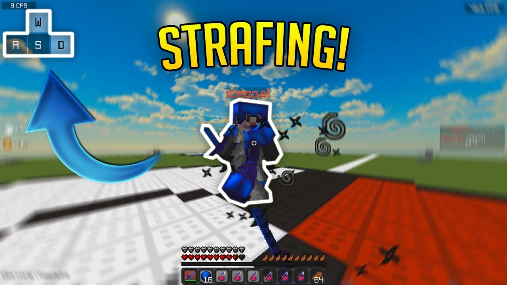
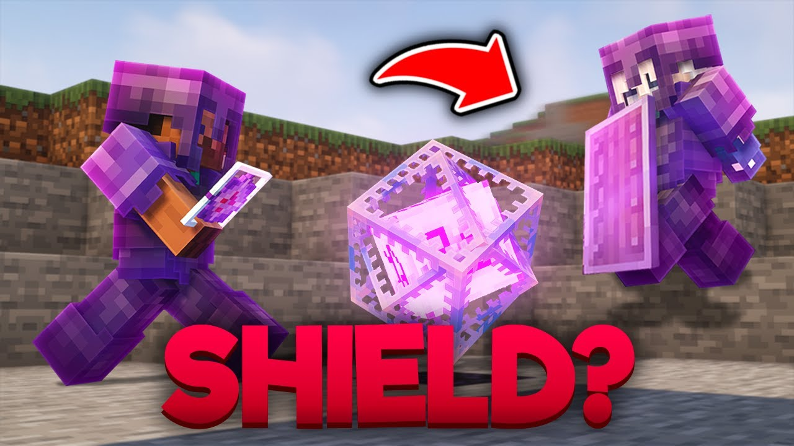
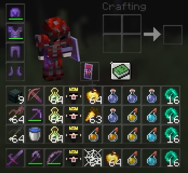
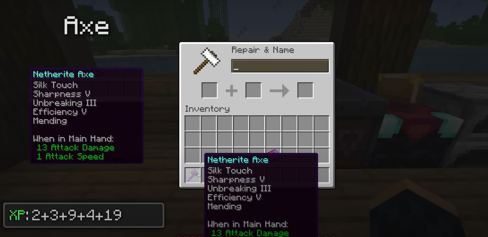
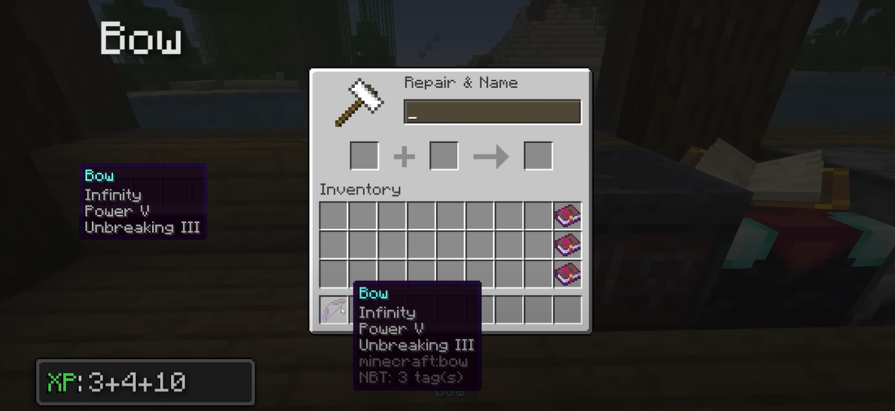
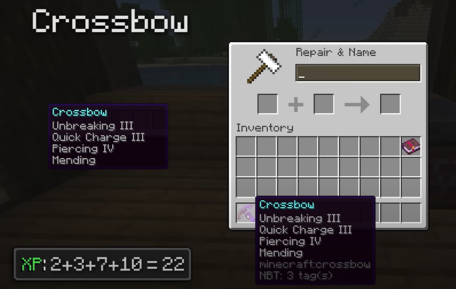
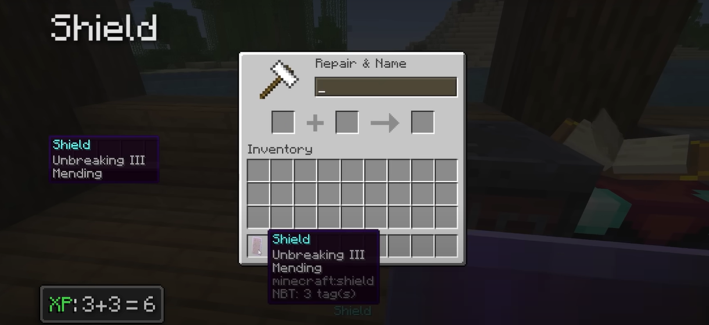

🔥 PvP Tips
- 
Master strafing and critical hits.
Utilize shields effectively to block incoming damage.
- 
Hotkey essential weapons, tools, and potions.
Brew Speed and Strength potions for an edge.


Practice block-hitting to reduce damage while attacking.
Use the environment to your advantage (e.g., lava, heights).

🕷️ Senpai Spider PvP Montage
⚔️ Weapons & Armors
Netherite Sword: Reliable high damage output.

- 
Netherite Axe: Highest single-hit damage, great for criticals.
- 
Bow (Power V, Infinity): Essential for ranged combat.
Crossbow (Quick Charge, Multishot/Piercing): Versatile ranged option.

Netherite Armor (Protection IV): Ultimate defense.
Shield: Crucial for mitigating damage.

Totem of Undying: A lifesaver in tough situations.
🎯 Pro Survival Tips
Always carry a Water Bucket: Nullify fall damage, extinguish fires, create obsidian.

Enable hitboxes (F3+B) for precise combat and interaction.
Master the art of MLG water bucket/hay bale clutches.


Establish secure bases with multiple escape routes.
Optimize mob farms for XP and valuable resources.
Understand Redstone basics for automation and traps.

Trade efficiently with Villagers for enchanted books and gear.
Always have 1 stack or 64 golden apples in your inventory.

🏃♂️ Parkour & Movement
Master sprint-jumps (jump at the edge of a block while sprinting).
Practice various jump lengths (1 to 4 blocks, neo jumps).

Use 'Shift' (sneak) for precise edge control and to prevent falling.
Time your jumps accurately for momentum and efficiency.
Learn to use ladders, vines, and scaffolding effectively.
Practice head-hitters and corner jumps.